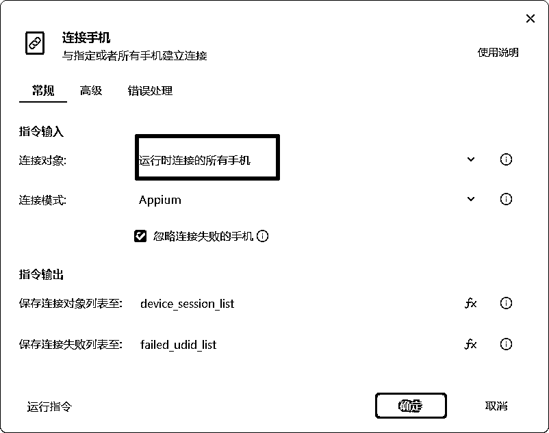
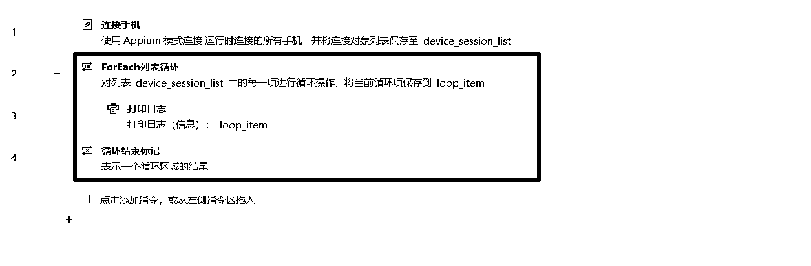

我用影刀rpa做了个多手机抖音自动发布机器人
来源：https://ood4bblwty.feishu.cn/docx/GknKddubGoB4dXxbIKgc5psSnOC
1、机器人介绍
- 公司的项目需要做矩阵，得在抖音的手机版上发布视频，一个人要管理20个手机，1个手机发布3个视频，也就是一天要发布60个抖音视频。这种耗时耗力的活儿当然是交给rpa干了。
- 更新app后，app内的元素可能会变。所以机器人做好后，就把要禁止这个app的更新
2、做机器人的思路
2.1、让机器人在一台手机上可以正常运行
2.1.1、连接手机
2.1.2、打开抖音app
这里需要获取app包名，我们打开连接手机，在手机打开抖音app，点击获取包名即可
2.1.3、进入抖音主页后，选择视频并发布。
因为抖音app的元素不是很稳定，这次能用的元素可能下次就不能用了。所以这里使用xpath来获取元素对象。

元素特征一般来说，以 text 属性来定位，关注可以写作 //*[@text='关注']。如果不行，那就需要通过【获取手机ui树】来找到那个稳定不变的属性，然后替换text即可。比如id不变，就可以写作//*[@id='关注']。
具体操作：
2.2、让机器人在多台手机上可以正常运行，提高流程的通用性
2.2.1、连接手机选择【运行时的所有手机】

2.2.2、通过【foreach列表循环】把每个手机对象拿出来

2.2.3、在循环里调用2.1写的机器人，让每个手机按顺序运行
2.2.4、用【并发调用子流程】替换【调用流程】，让多个手机同时运行
2.3、对固定错误进行处理，提高机器人的稳定性
2.3.1、有时候抖音会弹出来我们上次没有发布视频的草稿，我们需要让机器人识别这种情况，然后关闭该页面，继续下面的流程。
打开抖音后，如果页面上有【关闭弹窗】元素，就关闭该元素，然后继续下一次循环。即发布视频
2.4、对随机错误进行处理，提高机器人的稳定性
机器人运行过程中，可能会遇到各种随机错误，比如网络不佳，应用程序崩溃，人工误操作等等。我们要保证机器人遇到这些情况后，也能正常运行。
随机错误用try……catch……处理。如果可以正常运行，就和没有 try……catch……是一样的。
具体操作：
3、具体流程展示
3.1、主流程
3.2、自动发布抖音视频

3.3、清空第一个应用程序，并返回主页